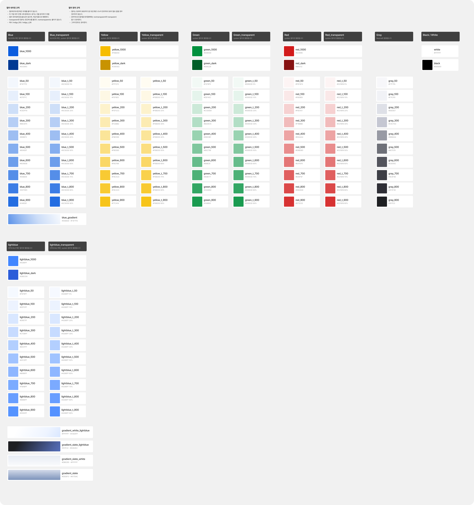
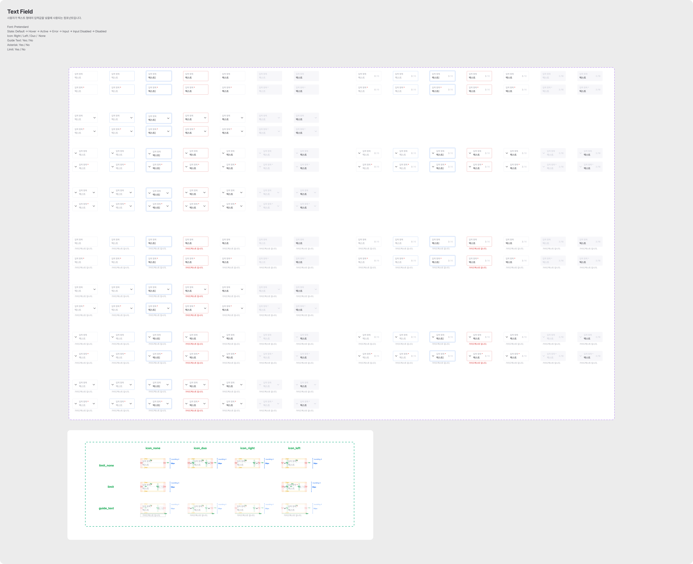
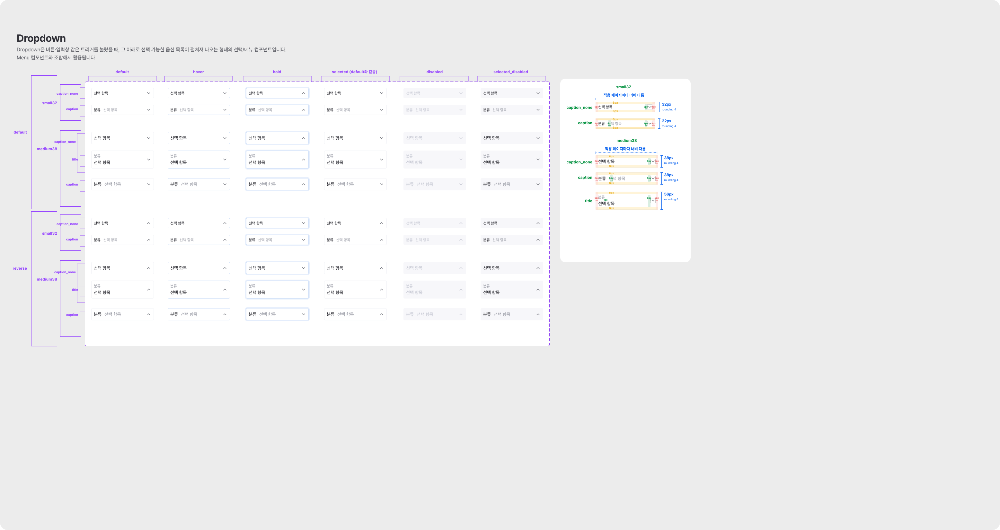

왜 공통 UI가 필요했나
플래드랩스는 자체 서비스와 여러 고객사의 프로젝트를 병행합니다. 비슷한 버튼과 입력 필드를 프로젝트마다 새로 만들다 보니, 디자인 값과 사용 방식도 조금씩 달라졌습니다. 디자이너가 정한 상태·간격·아이콘 기준을 개발자가 다시 묻고 해석하는 일도 반복됐습니다.
팀이 만들고 싶었던 것은 화면을 복사해 쓰는 템플릿이 아니라, 새로운 제품에서도 같은 기준으로 시작할 수 있는 공용 UI였습니다. 다만 모든 프로젝트를 한 가지 모습으로 통일할 수는 없었습니다. 공통 요소가 많은 B2B 제품을 중심으로 구축하고, 브랜드와 사용 경험이 다른 B2C 프로젝트는 별도 디자인 기준을 두기로 했습니다.
왜 Basic과 Complex를 나눴나
처음부터 모든 화면을 컴포넌트로 옮기기보다, 어디까지를 공통으로 관리할지 먼저 나눴습니다. 실제 Figma 라이브러리도 Foundation, Basic, Complex 페이지로 구성돼 있습니다. 한 화면의 완성된 형태를 그대로 재사용하는 대신, 변경되는 범위에 맞춰 기준·단일 요소·조합 패턴을 구분한 것입니다.
컬러·타이포그래피·아이콘. 여러 컴포넌트가 공유하는 값은 한곳에서 관리합니다.
Text Field·Tab·Toggle처럼 단독으로 쓰이는 UI의 크기와 상태를 정리합니다.
Dropdown·Modal·Menu처럼 여러 요소와 상호작용이 묶이는 흐름을 다룹니다.
이렇게 나누면 컬러 값 하나의 변경과 Dropdown의 선택 동작 변경을 같은 수준에서 다루지 않아도 됩니다. 제품을 만들면서 공통 요소를 추출해 라이브러리에 쌓고, 각 제품은 필요한 패키지 버전을 선택해 사용하도록 했습니다.

디자인 기준에서 사용 가능한 코드까지
디자이너가 Figma에서 정한 컬러·타이포를 코드에 매번 손으로 옮기면 이름이나 값이 어긋나기 쉽습니다. 팀은 디자인 토큰을 JSON으로 관리하고, 개발자가 변환 스크립트를 실행해 코드에서 사용할 값을 생성하는 흐름을 마련했습니다.
컴포넌트는 토큰을 사용해 구현하고, Storybook에 상태와 조합별 예시를 남겼습니다. 제품 팀이 이름만 보고 추측하는 대신 실제 모양과 동작을 확인할 수 있게 하려는 선택이었습니다.
- Figma디자인 기준과 토큰 정의
- 컴포넌트토큰을 적용한 공용 UI 구현
- Storybook상태·사용 예시 확인
- npm 패키지버전을 정해 배포
- 제품필요한 버전을 설치해 사용
Basic과 Complex의 대표 사례
둘 다 여러 상태를 갖지만, 공통화하는 대상은 다릅니다. Text Field는 입력 요소 자체의 표현을, Dropdown은 선택 가능한 목록이 열리고 닫히는 흐름까지 다룹니다. Figma 원본에서 각 단계가 무엇을 기준으로 정리했는지 볼 수 있습니다.


Basic의 상태를 충분히 정의하되, 여러 요소가 결합되는 순간에는 별도 패턴으로 관리한 점이 이 분류의 핵심입니다. 그래서 새 화면을 만들 때도 입력 필드의 스타일과 선택 메뉴의 동작을 각각 재사용할 수 있습니다.
npm 패키지로 배포하며 맞춘 사용 방식
컴포넌트가 저장소 안에서 보이는 것과 다른 제품에 설치해 쓰는 것은 달랐습니다. 초기 배포 과정에서는 JavaScript 컴포넌트가 표시돼도 vanilla-extract가 생성한 CSS가 소비 프로젝트에 로드되지 않는 문제가 있었습니다. 팀은 빌드 결과의 진입점에서 CSS를 함께 불러오고, 패키지의 exports와 sideEffects를 정리해 설치한 쪽에서 별도 내부 경로를 찾지 않도록 했습니다.
단일 패키지 구조와 사용 방식은 팀에서 함께 고민했습니다. 저는 공용 컴포넌트와 Storybook 예시 작업에 참여했고, 패키지 게시와 빌드 문제 해결은 동료가 진행했습니다. 함께 만든 디자인 시스템은 @plaidlabs/ui로 배포됐습니다.
제품 적용과 결과
NUVION 콘솔은 @plaidlabs/ui의 컬러·타이포와 Button, Dropdown 같은 컴포넌트를 사용합니다. 공통 UI 구현은 프론트엔드 화면 작업에서 적지 않은 비중을 차지했습니다. 이제 화면마다 스타일과 상태를 다시 만드는 대신 필요한 컴포넌트를 가져와 조합합니다.
버튼·입력·선택 UI의 스타일과 상태를 화면별로 만들고, 디자인 기준을 다시 확인했습니다.
패키지의 컴포넌트와 토큰을 사용하고, 화면 고유의 흐름과 데이터 연결에 집중했습니다.
같은 UI를 새로 만들고 상태별 스타일을 맞추는 시간이 줄었습니다.